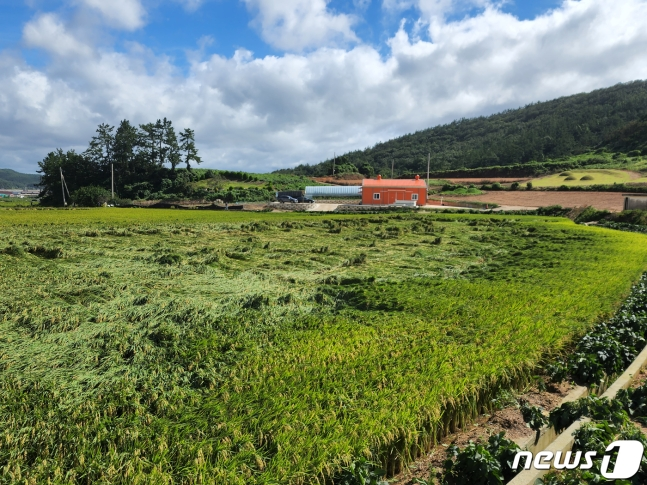

제11호 태풍 '힌남노(HINNAMNOR)'가 지나간 6일 오전 남 진도군 고군면 향동리의 한 농가에 벼가 도복 피해로 쓰러져 있다. (전남도 제공) 2022.9.6/뉴스1 ⓒ
News1 이수민 기자
(세종=뉴스1) 나혜윤 기자 = 농림축산식품부는 8일 제11호 태풍 '힌남노' 상륙에 따른 농작물 피해 규모가 오후 1시 기준으로 1만5602.0㏊(헥타르)로 집계됐다고 밝혔다.
유형별 피해 규모는 침수 8897.4㏊, 도복①(작물 쓰러짐) 3300.8㏊, 낙과 3403.8㏊로 파악됐다.
작물별 피해 규모는 벼 4211.4㏊, 채소 4164.5㏊, 밭작물 3616.6㏊, 과수 3580.3㏊, 특용작물② 29.3㏊로 집계됐다.
농경지는 69.8㏊가 유실·매몰됐고 비닐하우스 등 농업시설도 21.1㏊가 파손됐다. 가축 피해는 산란계 187마리, 꿀벌 11군, 한우 2마리가 폐사했다. 꿀벌 1군은 꿀벌 1개 집단단위를 뜻한다.
지역별로는 제주가 6280ha로 가장 많은 피해를 입었다. 이어 경북 5114.2ha, 전남2056ha, 경남 1047.1ha 순으로 피해를 입었다.
이번 태풍 피해는 지난 2019∼2021년 태풍·호우에 따른 농작물 피해 규모의 연평균 9만4463ha와 비교하면 낮은 수준인 것으로 확인됐다. 2002년 태풍 루사와 2003년 매미 상륙 당시의 농작물 피해 규모는 각각 24만㏊, 12만㏊에 달했다.
태풍 힌남노
2022년 제11호 태풍 힌남노(태풍 번호: 2211, 국제명: HINNAMNOR)는 2022년 9월 6일 한반도에 상륙한 태풍이다. '힌남노'는 라오스에서 제출한 이름으로, 라오스에 있는 힌남노 국립보호구역을 의미한다. 발생 이후 서진하며 약한 윈드시어와 높은 수온으로 인해 급발달하였고, 8월 30일 21시에 일본 오키나와 동쪽 약 560km 부근 해상에서 중심기압 920hPa, 최대풍속 54m/s의 '맹렬한' 태풍으로 1차 최성기를 맞이하였다.
▣주해:
① 도복 벼농사에서 풍수해로 인해 벼가 쓰러진 것을 이야기한다. 이때 조기에 쓰러진 벼를 다시 묶어서 일으켜 세우는 작업을 해줘야한다. 최근 농촌진흥청 혹은 농림축산식품부는 도복과 같은 농업의 한자용어를 한글용어로 순화하고 있는데, 도복의 경우는 '쓰러짐'으로 순화하였다.
② 특용작물 식용작물을 보통작물이라고 하는 데 대한 대칭어이며, 공예작물·공업작물·원료작물 등이라고도 한다. 이는 다른 작물과는 달리 재배 경영상의 특성을 지니고 있다.


2022년 제11호 태풍 힌남노(태풍 번호: 2211, 국제명: HINNAMNOR)는 2022년 9월 6일 한반도에 상륙한 태풍이다. '힌남노'는 라오스에서 제출한 이름으로, 라오스에 있는 힌남노 국립보호구역을 의미한다. 발생 이후 서진하며 약한 윈드시어와 높은 수온으로 인해 급발달하였고, 8월 30일 21시에 일본 오키나와 동쪽 약 560km 부근 해상에서 중심기압 920hPa, 최대풍속 54m/s의 '맹렬한' 태풍으로 1차 최성기를 맞이하였다.